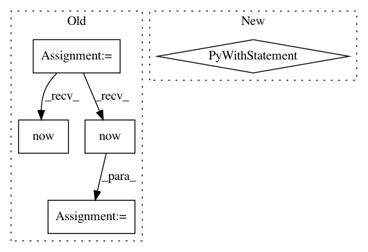

96e4af6e86e93da021c29a4273dcdfaeab8fdfcf,tensorflow_transform/beam/impl.py,_RunMetaGraphDoFn,process,#_RunMetaGraphDoFn#Any#Any#,262
Before Change
if self._graph_state is None:
if (getattr(self._thread_local, "graph_state", None) is None or
self._thread_local.graph_state.saved_model_dir != saved_model_dir):
start = datetime.datetime.now()
tf_config = _maybe_deserialize_tf_config(self._serialized_tf_config)
self._thread_local.graph_state = self._GraphState(
saved_model_dir, self._input_schema, self._output_schema, tf_config)
self._graph_load_seconds_distribution.update(
int((datetime.datetime.now() - start).total_seconds()))
self._graph_state = self._thread_local.graph_state
else:
assert self._graph_state.saved_model_dir == saved_model_dir
After Change
self._session = tf.Session(
graph=self._graph_state.graph, config=self._graph_state.tf_config)
with self._session.graph.as_default():
self._session.run(tf.tables_initializer())
// This should remain true throughout the lifetime of this DoFn, regardless
// of whether or not self._graph_state was cached.
assert self._graph_state.saved_model_dir == saved_model_dir
self._batch.append(element)
if len(self._batch) >= self._desired_batch_size:
In pattern: SUPERPATTERN
Frequency: 3
Non-data size: 5
Instances
Project Name: tensorflow/transform
Commit Name: 96e4af6e86e93da021c29a4273dcdfaeab8fdfcf
Time: 2017-08-07
Author: tf-transform-dev@google.com
File Name: tensorflow_transform/beam/impl.py
Class Name: _RunMetaGraphDoFn
Method Name: process
Project Name: pfnet/optuna
Commit Name: 280c4fb338bbb4cc967adfcc9714f05a606c6acf
Time: 2020-04-29
Author: ytsmiling@gmail.com
File Name: tests/storages_tests/test_storages.py
Class Name:
Method Name: test_get_all_study_summaries
Project Name: pfnet/optuna
Commit Name: 754642db5ff35be98e4b6fc3a17823482881cb27
Time: 2020-04-29
Author: ytsmiling@gmail.com
File Name: tests/storages_tests/test_storages.py
Class Name:
Method Name: test_get_all_study_summaries